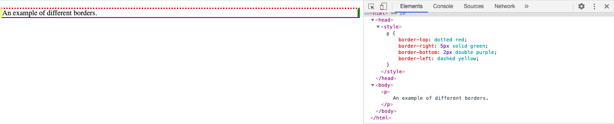
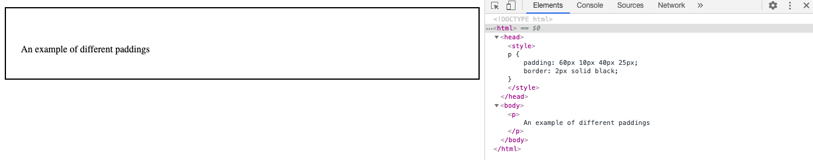

Border
The border of an element is a line around your element. You have the options to change the colour of the border, the width of the border, what side of the element it is on and whether the border is solid, dotted, etc. You can also make a border rounded so instead of looking like a rectangle or square if looks more like an oval.
You can change the borders separately using border-style, border-side, border-width and border-colour or you can use them all together as shown in the image. Border-style is always necessary, the others can be added if you choose. Border-radius is needed if you want a rounded border.
Margin
The margin is the space around an element on the page. The margin is outside the border. You can alter the top, bottom, right and left margins to change the way your page looks. You cannot change the colour of a margin, it will stay the same as the background colour. You can also create a negative margin which will overlay different elements on top of one another.
You can change the top, right, bottom and left margins either separately or on the same line. If you want all the margins to be the same you can put the margin size once. If you want the top and bottom to be one size and the left and right to be a different size you can put the margin size twice. If you want the top to be one size, the right and left to be another size and the bottom another size you can state the margin size three times. You can also make the margin size auto if you have the width of your element set up and it will centre itself automatically (only horizontally though).

Padding
The padding is the space inside an element between the content and the border. The padding is inside the border. You can alter the top, bottom, right and left padding to change the way your page looks. You can change the colour of your padding so that individual elements have different background colours.
The padding works the same as the margins above, so you can put the padding size once, twice, three or four times depending on if you want different sized padding for the top, right, bottom and left. However you cannot use negative numbers for your sizes unlike for margins. If you want to keep the width of an element the same overall (which looks nicer on your page), you can use the box-sizing option. This will mean that if you make the padding larger, it will shrink the size of the content so that the overall width stays the same.
